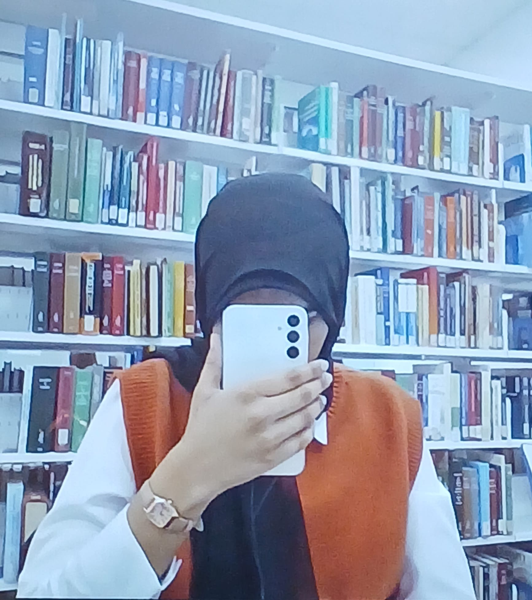

Welcome! I'm Yusyra, second-year computer science student at the University of Toronto 👋.
I’m currently focused on improving my programming skills and working on personal projects to grow as a developer 😎.
Throughout my studies so far, I've really enjoyed learning theorical calculus (RIP MAT137; it's no longer offered at UofT) and linear algebra. I'm also interested in exploring machine learning and data science in the future 💡!
Beyond academics, you'll most probably find me reading historical fiction/non-fiction, spending time with my family, or disappearing into random internet rabbit holes after stumbling across an article (likely on Quantum Mechanics or WW2) 🌀. Oh, and of course, grinding Leetcode!
Feel free to explore my projects and get in touch, even just to say hi 📬! You can reach me at or connect with me on .
This section highlights my substantial CS projects. The rest live in my ; feel free to check them out 🌐!
An interactive graph-based visualization tool that models bird species interactions in Toronto (2025) using real-world biodiversity data from iNaturalist.
A comparative analysis of electricity accessibility factors across African countries using statistical methods, done in colaboration with the CATF.
My first-ever full scale project. A fantasy-themed twist on the classic Rock, Paper, Scissors game designed to play against the computer (random moves) on your terminal.
I’ve always had a wide range of interests, which is one of the reasons I’m grateful to be part of the Arts & Science Faculty at UofT. It’s let me to explore various subjects outside of computer science through courses I genuinely chose out of curiosity 🧩.
Here I’m showcasing some of the projects, ideas, and work that came out of those courses.